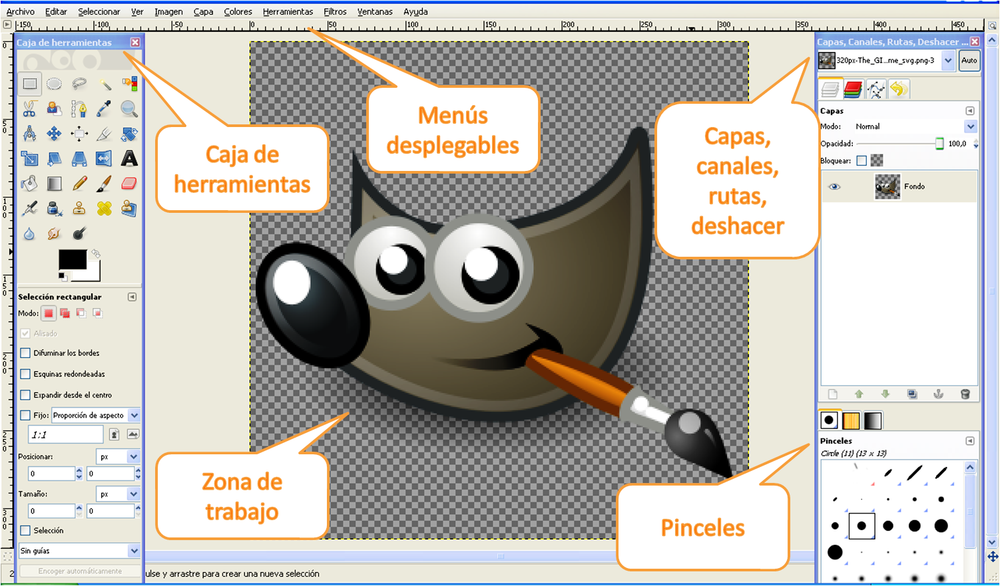
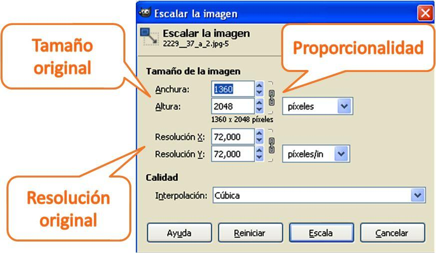

| |
La edición de imágenes digitales, bien obtenidas mediante cámaras digitales o bien digitalizadas con un escáner, permite modificar prácticamente todos los elementos de una imagen.
Cambiar el color, aplicar efectos artísticos, eliminar elementos, combinar varias imágenes, son operaciones básicas que se realizan con un programa de edición de imágenes. |
|
Img 6. Logo The GIMP Imagen de Wikibooks bajo licencia GNU GPL |
U10 - Información digital y Web
1.2. Edición de imágenes: GIMP
Actividad
The GIMP ó GNU Image Manipulation Program es el editor de imágenes bajo licencia pública de software libre compatible con los sistemas operativos GNU/Linux, Windows y Mac OX.
Objetivos
Vas a trabajar con este programa a lo largo del tema y en la tarea. Por ello ya puedes imaginar que el primer paso que debes dar es descargar el programa. Lo puedes encontrar en sitio web oficial: descargar GIMP
Si, además, quieres una ayudita, descarga también un manual manual GIMP
Trabajar con GIMP es muy sencillo, su apariencia general se basa en menús que se abren en ventanas alrededor de la zona activa o de trabajo.
Sin embargo, las posibilidades del programa son tan grandes que, para un usuario poco habituado al diseño y edición de imágenes digitalmente, puede resultar complicado.
En los siguientes pasos te presentamos el programa y sus herramientas principales, pero la meta la marcarás tú.
|  |
|
Img 7. Pantalla y ventanas principales en GIMP Imagen de producción propia |
| Reducir imágenes |
No pierdas de vista que el objetivo del tema es el trabajo con imágenes en la web, no un curso especializado sobre edición y retoque fotográfico.
|
Las imágenes obtenidas desde una cámara digital o desde un escáner suelen tener una resolución y un tamaño demasiado grandes para trabajar con ellas en internet, ya sea para enviarlas por e-mail o para publicarlas en una página web o en un blog. Por ello, una de las tareas más habituales es la reducción del tamaño o de la calidad de la imagen.
Para ello, sólo hay que selecionar la opción escalar la imagen en el menú imagen. |
 |
|
Img 8. Pantalla escalar imágenes Imagen de producción propia |
Pre-conocimiento
Una herramienta fundamental en el trabajo con GIMP es el uso de capas. Es esta dirección encontrarás un vídeotutorial muy útil.